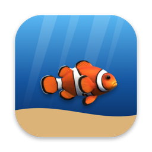

Privacy Policy
Fish Ocean · updated September 27, 2026
Fish Ocean does not collect personal information, does not use analytics or advertising, and does not track you.
What stays on your Mac
Your fish (its name, size, age, journal and settings) is saved only on your Mac.
Swimming with friends
If you use the friends feature, a small amount of data is stored in Apple's iCloud (CloudKit public database) so your friends' apps can find your fish: a random fish code, the fish's name and color, when it was last online, and — only during a visit — its position in the water. This data is not linked to your Apple ID name or email, and we cannot see who you are. Friends on the same local network connect directly between Macs.
Purchases
The optional in-app purchase is handled entirely by Apple. We never see payment details.
Children
Fish Ocean does not knowingly collect any personal information from anyone, including children.
Contact
Questions? Email amyzdevelopment@gmail.com.